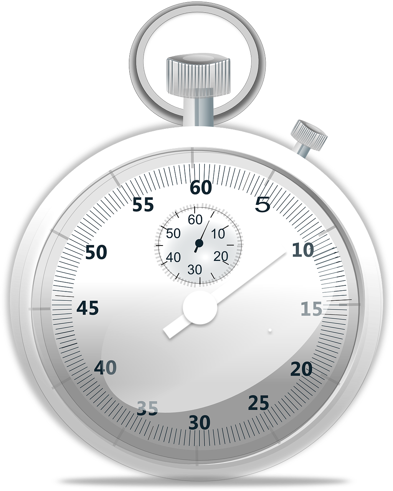

<div id="stopwatch-before"></div>
<div id="stopwatch" (click)="onAutoTurnTimer()" class="stopwatch-boundary">

  
  <div #stopwatchAssets>
    
    
    

    <!--DragDrop Specifics:-->
    <div cdkDropListGroup id="list-group">

      <div cdkDropList class="drag-list" *ngFor="let array of timerDragCircles; let i = index" 
        (cdkDropListDropped)="dropped($event)" [cdkDropListData]="timerDragCircles[i]" 
        [ngStyle]="applyDragCircleRotate(i)" [id]='i'>
    
        <mat-icon *ngFor="let item of timerDragCircles[i]" cdkDrag 
          cdkDragBoundary=".stopwatch-boundary" class="drag-item" inline="true"
          stopPropo>
     
          <div *cdkDragPlaceholder class="drag-placeholder"></div>          
          hourglass_full
        </mat-icon>
      </div>
      
    </div>  
  </div>
</div>

<mat-card *ngIf="showMatCardHint">
  <mat-card-content>
    <p>
      Click the stopwatch to start the timer. <br>
      Move the hourglass icon to change the duration.
    </p>
  </mat-card-content>
  <span></span>
  <button mat-raised-button (click)="showMatCardHint = false">
    Got it!
  </button>
</mat-card>